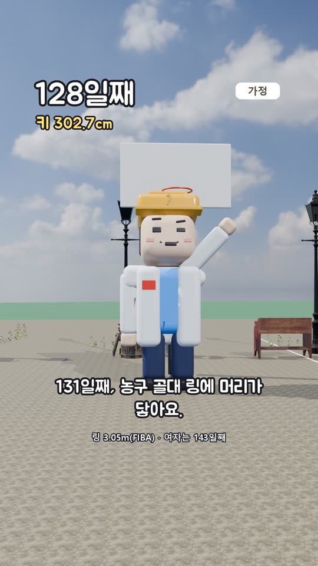
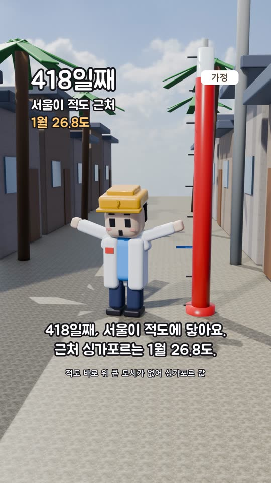

FITAHW
피타우
소개
자료실
데이터
구독
◐
전체
만약
대결
일·이직
돈·자산
디지털·크리에이터
가족·사회
생활·건강
창업·자영업
숫자로 본 만약
매일 조금씩 바뀐다면, 며칠째에 무슨 일이?
3D 실험맨 영상 속 숫자를 글마다 출처·계산식과 함께 모아 뒀어요. 모두 가정이에요.

키가 매일 1cm씩 자란다면
131일째 농구 링

한국이 매일 10km씩 남쪽으로 간다면
418일째 적도
중력이 매일 1%씩 약해진다면
230일째 점프 10배
대결 전부 보기
→